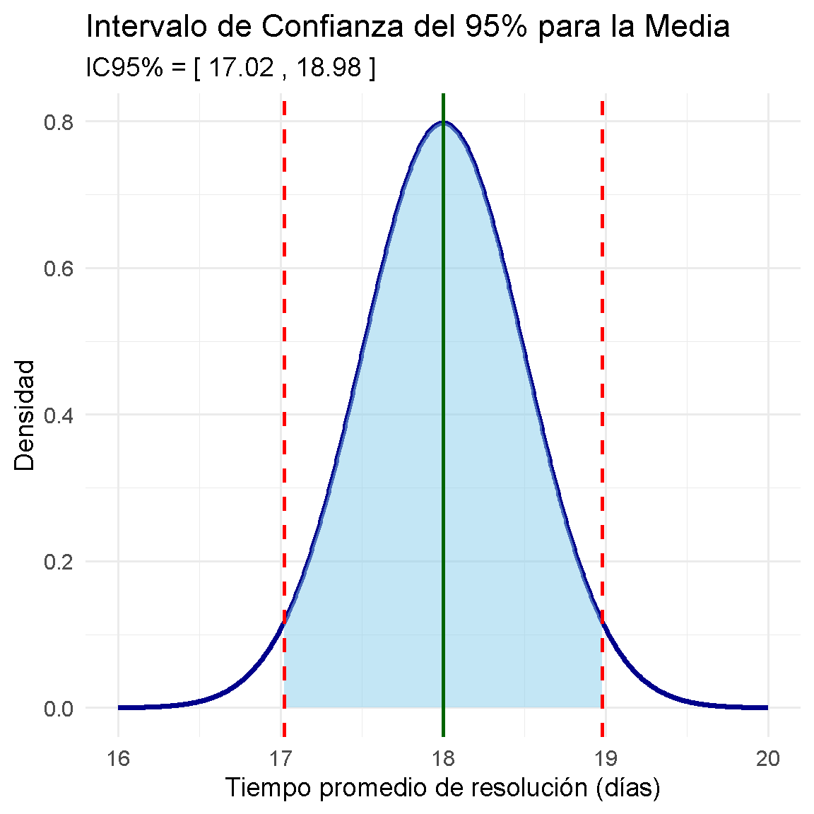
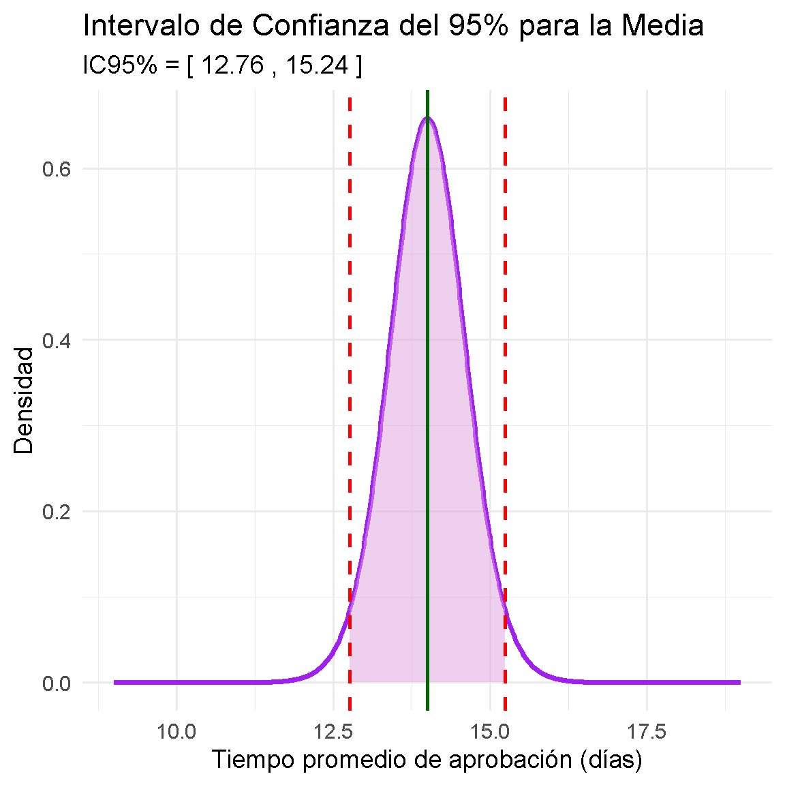
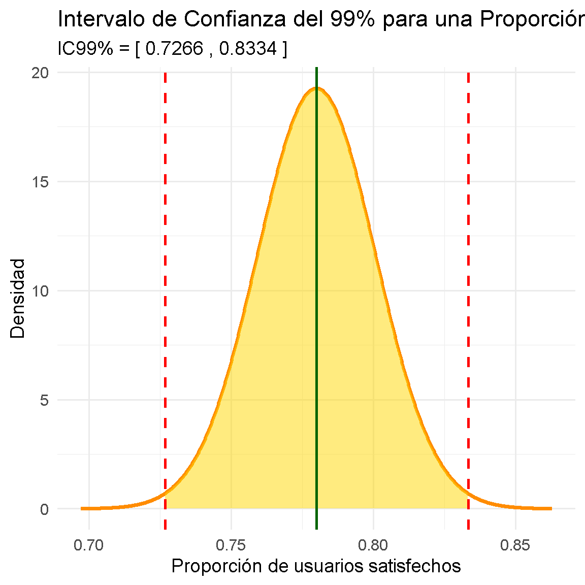
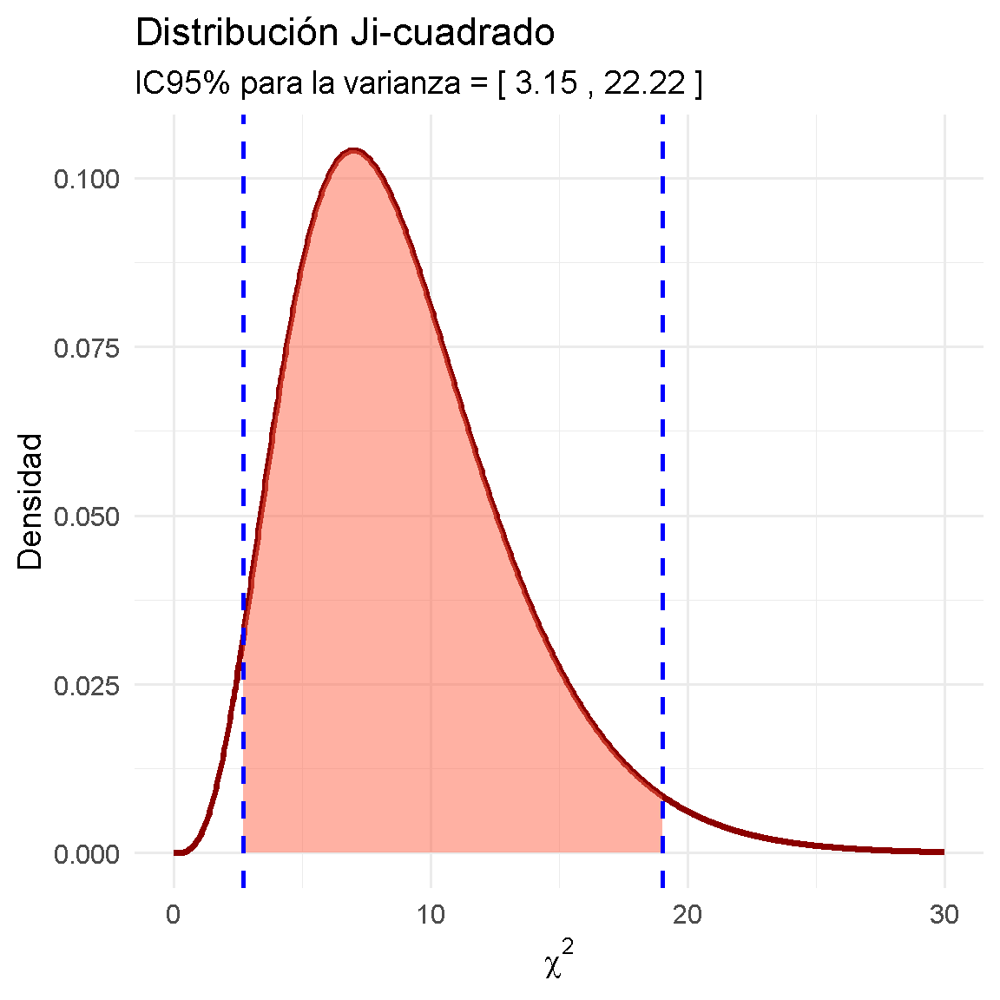

La fórmula principal del intervalo de confianza para la media con varianza poblacional conocida es:
\bar{x} \pm z_{\alpha/2}\frac{\sigma}{\sqrt{n}}
Ejercicio 1
La Secretaría de Atención Ciudadana de la alcaldía de un municipio desea evaluar el tiempo promedio que tardan los funcionarios en resolver solicitudes de los ciudadanos.
Con base en estudios históricos, se sabe que la desviación estándar poblacional del tiempo de respuesta es de 4 días.
Se selecciona una muestra aleatoria de 64 solicitudes y se obtiene un tiempo promedio de resolución de 18 días.
La administración municipal desea construir un intervalo de confianza del 95% para estimar el tiempo promedio poblacional de respuesta a las solicitudes ciudadanas.
# Intervalo de confianza para la media poblacional# Varianza poblacional conocida# Datos del ejercicion <-64media_muestral <-18sigma <-4nivel_confianza <-0.95# Valor crítico Zalpha <-1- nivel_confianzaz <-qnorm(1- alpha/2)# Error estándarerror_estandar <- sigma /sqrt(n)# Margen de errormargen_error <- z * error_estandar# Límites del intervalo de confianzalimite_inferior <- media_muestral - margen_errorlimite_superior <- media_muestral + margen_error# Resultadoscat("Intervalo de confianza del 95% para la media poblacional:\n")
Intervalo de confianza del 95% para la media poblacional:
cat("Límite superior =", round(limite_superior, 2), "\n")
Límite superior = 18.98
Ver código
# Intervalo de confianza para la media poblacional# Gráfica con ggplot2# Libreríalibrary(ggplot2)# Datos del ejerciciomedia <-18sigma <-4n <-64z <-1.96# Error estándarerror_estandar <- sigma /sqrt(n)# Límites del intervalo de confianzaLI <- media - z * error_estandarLS <- media + z * error_estandar# Valores para la curvax <-seq(16, 20, length =1000)# Distribución normal de la media muestraldatos <-data.frame(x = x,y =dnorm(x, mean = media, sd = error_estandar))# Área sombreadasombreado <-subset(datos, x >= LI & x <= LS)# Gráficaggplot(datos, aes(x = x, y = y)) +# Curva normalgeom_line(color ="darkblue", linewidth =1.3) +# Área sombreada del ICgeom_area(data = sombreado,aes(x = x, y = y),fill ="skyblue",alpha =0.5 ) +# Límites del intervalogeom_vline(xintercept = LI,color ="red",linetype ="dashed",linewidth =1 ) +geom_vline(xintercept = LS,color ="red",linetype ="dashed",linewidth =1 ) +# Mediageom_vline(xintercept = media,color ="darkgreen",linewidth =1 ) +# Etiquetaslabs(title ="Intervalo de Confianza del 95% para la Media",subtitle =paste("IC95% = [",round(LI, 2),",",round(LS, 2),"]" ),x ="Tiempo promedio de resolución (días)",y ="Densidad" ) +theme_minimal(base_size =14)

Interpretación
Con un 95% de confianza se puede estimar que el verdadero tiempo promedio poblacional de respuesta de las solicitudes ciudadanas por parte de la Secretaría de Atencion Ciudadana está entre 17.02 y 18.98 días. Y habra una probabilidad del 5% de estimar valores para dicha verdadera media por fuera del anterior intervalo.
4 .Media de la Población-Varianza Poblacional Desconocida
La fórmula principal del intervalo de confianza para la media con varianza poblacional desconocida es:
\bar{x} \pm t_{(\alpha/2,n-1)}\frac{s}{\sqrt{n}}
Ejercicio 2
La Unidad Administrativa Especial de Catastro de una ciudad colombiana desea evaluar el tiempo promedio que tardan los analistas en aprobar trámites de actualización catastral.
Para ello, se seleccionó una muestra aleatoria de 25 trámites procesados durante el último mes. Los resultados mostraron un tiempo promedio de aprobación de 14 días, con una desviación estándar muestral de 3 días.
La entidad desea construir un intervalo de confianza del 95% para estimar el tiempo promedio poblacional de aprobación de trámites.
# Intervalo de confianza para la media poblacional# Varianza poblacional desconocida# Datos del ejercicio de Catastro# Datos del ejercicion <-25media_muestral <-14s <-3nivel_confianza <-0.95# Grados de libertadgl <- n -1# Valor crítico talpha <-1- nivel_confianzat_critico <-qt(1- alpha/2, df = gl)# Error estándarerror_estandar <- s /sqrt(n)# Margen de errormargen_error <- t_critico * error_estandar# Límites del intervalo de confianzalimite_inferior <- media_muestral - margen_errorlimite_superior <- media_muestral + margen_error# Resultadoscat("Intervalo de confianza del 95% para la media poblacional:\n")
Intervalo de confianza del 95% para la media poblacional:
cat("Límite superior =", round(limite_superior, 2), "\n")
Límite superior = 15.24
Ver código
# Intervalo de confianza para la media# Distribución t de Studentlibrary(ggplot2)# Datosmedia <-14s <-3n <-25gl <- n -1# Valor crítico tt_critico <-qt(0.975, df = gl)# Error estándarerror_estandar <- s /sqrt(n)# Intervalo de confianzaLI <- media - t_critico * error_estandarLS <- media + t_critico * error_estandar# Valores para la curvax <-seq(media -5, media +5, length =1000)# Distribución tdatos <-data.frame(x = x,y =dt((x - media) / error_estandar, df = gl) / error_estandar)# Área sombreadasombreado <-subset(datos, x >= LI & x <= LS)# Gráficaggplot(datos, aes(x = x, y = y)) +geom_line(color ="purple", linewidth =1.3) +geom_area(data = sombreado,aes(x = x, y = y),fill ="plum",alpha =0.5 ) +geom_vline(xintercept = LI,color ="red",linetype ="dashed",linewidth =1 ) +geom_vline(xintercept = LS,color ="red",linetype ="dashed",linewidth =1 ) +geom_vline(xintercept = media,color ="darkgreen",linewidth =1 ) +labs(title ="Intervalo de Confianza del 95% para la Media",subtitle =paste("IC95% = [",round(LI, 2),",",round(LS, 2),"]" ),x ="Tiempo promedio de aprobación (días)",y ="Densidad" ) +theme_minimal(base_size =14)

Interpretación
Con un 95% de confianza, se puede afirmar que el tiempo promedio que tarda la entidad pública en aprobar los trámites de actualización catastral se encuentra entre 12.76 y 15.24 días.Y habra una probabilidad de 5% de estimar valores para dicha verdadera media por fuera del intervalo anterior.
La Empresa de Transporte Masivo de una ciudad colombiana desea estimar la proporción de usuarios satisfechos con el nuevo sistema digital de recarga de tarjetas implementado en las estaciones principales.
Para ello, se seleccionó una muestra aleatoria de 400 usuarios. De los encuestados, 312 manifestaron estar satisfechos con el servicio.
La entidad desea construir un intervalo de confianza del 99% para estimar la proporción poblacional de usuarios satisfechos.
# Intervalo de confianza para una proporción poblacional# Datos del ejercicio de transporte masivo# Datos del ejercicion <-400x <-312nivel_confianza <-0.99# Proporción muestralp_hat <- x / n# Valor crítico Zalpha <-1- nivel_confianzaz <-qnorm(1- alpha/2)# Error estándarerror_estandar <-sqrt((p_hat * (1- p_hat)) / n)# Margen de errormargen_error <- z * error_estandar# Límites del intervalo de confianzalimite_inferior <- p_hat - margen_errorlimite_superior <- p_hat + margen_error# Resultadoscat("Intervalo de confianza del 99% para la proporción poblacional:\n")
Intervalo de confianza del 99% para la proporción poblacional:
cat("Límite superior =", round(limite_superior, 4), "\n")
Límite superior = 0.8334
Ver código
# Intervalo de confianza para una proporción poblacionallibrary(ggplot2)# Datosn <-400x <-312confianza <-0.99# Proporción muestralp_hat <- x / n# Valor crítico Zz <-qnorm(0.995)# Error estándarerror_estandar <-sqrt((p_hat * (1- p_hat)) / n)# Intervalo de confianzaLI <- p_hat - z * error_estandarLS <- p_hat + z * error_estandar# Valores para la curvax_vals <-seq( p_hat -4* error_estandar, p_hat +4* error_estandar,length =1000)# Distribución normaldatos <-data.frame(x = x_vals,y =dnorm(x_vals, mean = p_hat, sd = error_estandar))# Área sombreadasombreado <-subset(datos, x >= LI & x <= LS)# Gráficaggplot(datos, aes(x = x, y = y)) +geom_line(color ="darkorange", linewidth =1.3) +geom_area(data = sombreado,aes(x = x, y = y),fill ="gold",alpha =0.5 ) +geom_vline(xintercept = LI,color ="red",linetype ="dashed",linewidth =1 ) +geom_vline(xintercept = LS,color ="red",linetype ="dashed",linewidth =1 ) +geom_vline(xintercept = p_hat,color ="darkgreen",linewidth =1 ) +labs(title ="Intervalo de Confianza del 99% para una Proporción",subtitle =paste("IC99% = [",round(LI, 4),",",round(LS, 4),"]" ),x ="Proporción de usuarios satisfechos",y ="Densidad" ) +theme_minimal(base_size =14)

Interpretación
Con un 99% de confianza, se puede afirmar que la proporción real de usuarios satisfechos con el sistema digital de recarga de la Empresa de Transporte Masivo se encuentra entre 72.66% y 83.33%.Y esto significa que existe únicamente un 1% de probabilidad de que la verdadera proporción poblacional de usuarios satisfechos se encuentre fuera de ese intervalo de confianza.
6 .Varianza de la Población
Intervalo de Confianza para la Varianza Poblacional
La Empresa de Energía Pública de una ciudad colombiana desea analizar la variabilidad en el tiempo de respuesta a las solicitudes de reconexión del servicio eléctrico.
Para ello, se seleccionó una muestra aleatoria de 10 solicitudes atendidas durante una semana. Los tiempos de respuesta, medidos en horas, fueron los siguientes:
12,15,10,18,14,11,16,13,17,14
La entidad desea construir un intervalo de confianza del 95% para estimar la varianza poblacional de los tiempos de respuesta.
# Datos muestrales: tiempos de respuesta de reconexión eléctricamuestra <-c(12, 15, 10, 18, 14, 11, 16, 13, 17, 14)# Tamaño de la muestran <-length(muestra)# Calcular la varianza muestralvar_muestral <-var(muestra)# Nivel de confianza del 95%alpha <-0.05chi2_izq <-qchisq(1- alpha /2, df = n -1) # Cuantil superiorchi2_der <-qchisq(alpha /2, df = n -1) # Cuantil inferior# Calcular el intervalo de confianza para la varianzalim_inf <- (n -1) * var_muestral / chi2_izqlim_sup <- (n -1) * var_muestral / chi2_der# Mostrar los resultadoscat("La varianza muestral es:", var_muestral, "\n")
La varianza muestral es: 6.666667
Ver código
# Intervalo de confianza para la varianza poblacional# Empresa de Energía Pública# Datos muestralesdatos <-c(12, 15, 10, 18, 14, 11, 16, 13, 17, 14)# Tamaño de la muestran <-length(datos)# Varianza muestrals2 <-var(datos)# Nivel de confianzanivel_confianza <-0.95# Nivel de significanciaalpha <-1- nivel_confianza# Grados de libertadgl <- n -1# Valores críticos chi-cuadradochi_superior <-qchisq(alpha/2, df = gl, lower.tail =FALSE)chi_inferior <-qchisq(1- alpha/2, df = gl, lower.tail =FALSE)# Límites del intervalo de confianzalimite_inferior <- (gl * s2) / chi_superiorlimite_superior <- (gl * s2) / chi_inferior# Resultadoscat("Intervalo de confianza del 95% para la varianza poblacional:\n")
Intervalo de confianza del 95% para la varianza poblacional:
cat("Límite superior =", round(limite_superior, 2), "\n")
Límite superior = 22.22
Ver código
# Intervalo de confianza para la varianza poblacional# Distribución Ji-cuadrado# Libreríalibrary(ggplot2)# Datos del ejerciciodatos_muestra <-c(12,15,10,18,14,11,16,13,17,14)# Tamaño de muestran <-length(datos_muestra)# Grados de libertadgl <- n -1# Varianza muestrals2 <-var(datos_muestra)# Nivel de significanciaalpha <-0.05# Valores críticos Ji-cuadradochi_izq <-qchisq(alpha/2, df = gl)chi_der <-qchisq(1- alpha/2, df = gl)# Intervalo de confianzaLI <- ((n -1) * s2) / chi_derLS <- ((n -1) * s2) / chi_izq# Valores para la curvax <-seq(0, 30, length =1000)# Distribución Ji-cuadradodatos <-data.frame(x = x,y =dchisq(x, df = gl))# Área sombreada correctasombreado <-subset(datos, x >= chi_izq & x <= chi_der)# Gráficaggplot(datos, aes(x = x, y = y)) +# Curva Ji-cuadradogeom_line(color ="darkred",linewidth =1.3 ) +# Área sombreadageom_area(data = sombreado,aes(x = x, y = y),fill ="tomato",alpha =0.5 ) +# Líneas críticasgeom_vline(xintercept = chi_izq,color ="blue",linetype ="dashed",linewidth =1 ) +geom_vline(xintercept = chi_der,color ="blue",linetype ="dashed",linewidth =1 ) +# Etiquetaslabs(title ="Distribución Ji-cuadrado",subtitle =paste("IC95% para la varianza = [",round(LI, 2),",",round(LS, 2),"]" ),x =expression(chi^2),y ="Densidad" ) +theme_minimal(base_size =14)

Interpretación
Con un 95% de confianza, se puede afirmar que la varianza poblacional del tiempo de respuesta a las solicitudes de reconexión eléctrica se encuentra entre 3.15 y 22.22 horas².Y habrá una probabilidad del 5% de encontrar valores para dicha verdadera varianza por fuera del anterior intervalo.
La Secretaría de Atención Ciudadana de un municipio implementó un nuevo sistema digital para reducir el tiempo de respuesta en los trámites administrativos.
Para evaluar si el sistema mejoró la eficiencia, se seleccionaron 10 funcionarios públicos y se midió el tiempo promedio (en minutos) que tardaban en resolver un trámite antes y después de la implementación del sistema.
# Intervalo de confianza para muestras pareadas# Secretaría de Atención Ciudadana# Datosantes <-c(45, 50, 48, 52, 47, 49, 51, 46, 53, 50)despues <-c(38, 42, 40, 46, 41, 43, 44, 39, 47, 43)# Diferenciasdiferencias <- antes - despues# Mostrar diferenciasdiferencias
[1] 7 8 8 6 6 6 7 7 6 7
Ver código
# Tamaño de muestran <-length(diferencias)# Media de las diferenciasmedia_d <-mean(diferencias)# Desviación estándarsd_d <-sd(diferencias)# Nivel de confianzaconfianza <-0.95alpha <-1- confianza# Valor crítico tt_critico <-qt(1- alpha/2, df = n -1)# Error estándarerror_estandar <- sd_d /sqrt(n)# Margen de errormargen_error <- t_critico * error_estandar# Intervalo de confianzaLI <- media_d - margen_errorLS <- media_d + margen_error# Resultadoscat("Media de las diferencias:", round(media_d, 3), "\n")
cat("Intervalo de confianza al 95%: (",round(LI, 3), ",",round(LS, 3), ")\n")
Intervalo de confianza al 95%: ( 6.236 , 7.364 )
Interpretación
Con un 95% de confianza, la implementación del sistema digital redujo el tiempo promedio de atención entre aproximadamente 6.23 y 7.36 minutos por trámite.Y habrá una probabilidad del 5% de encontrar valores para dicha diferencia verdadera de medias por fuera del intervalo.
Como todo el intervalo es positivo, existe evidencia de que el nuevo sistema contribuyó a disminuir los tiempos de atención en la Secretría de Atención Ciudadana.
7.2 .Muestras Independientes
Hay dos casos:
Caso a): Diferencia de las Medias de Dos Poblaciones-Varianzas Desconocidas e Iguales
Caso b): Diferencia de las Medias de Dos Poblaciones-Varianzas Desconocidas y Distintas
Para determinar si las varianzas poblacionales desconocidas son iguales o distintas, se debe calcular el siguiente intervalo para el cociente de dos varianzas poblacionales:
Si el anterior intervalo contiene al número 1, las varianzas poblacionales desconocidas seran iguales, en caso contrario distintas
7.2.1 .Diferencia de las Medias de Dos Poblaciones-Varianzas Desconocidas e Iguales
Ejercicio 6
La Secretaría de Movilidad de una ciudad desea comparar el tiempo promedio de atención de solicitudes entre dos sedes administrativas: Sede Norte y Sede Sur.
Para ello, se seleccionaron aleatoriamente funcionarios de ambas sedes y se registró el tiempo (en minutos) que tardaron en resolver una solicitud ciudadana.
Con un 95% de confianza, la diferencia entre los tiempos promedio de atención de la Sede Norte y la Sede Sur está entre 1.37 y 6.62 minutos. Y habrá una probabilidad del 5% de encontrar valores para dicha diferencia verdadera de medias por fuera del anterior intervalo.
Como el intervalo es completamente positivo, se concluye que la Sede Norte tarda en promedio más tiempo en atender solicitudes que la Sede Sur.
7.2.2 .Diferencia de las Medias de Dos Poblaciones-Varianzas Desconocidas y Distintas
Ejercicio 7
La Secretaría de Hacienda de una ciudad desea comparar el tiempo promedio que tardan dos plataformas digitales en procesar solicitudes tributarias.
Se seleccionaron aleatoriamente dos grupos independientes de trámites y se registró el tiempo de procesamiento (en minutos).
Con un 95% de confianza, la diferencia entre los tiempos promedio de procesamiento de las plataformas está entre −18.32 y −9.42 minutos. Y habrá una probabilidad del 5% de encontrar valores para dicha diferencia verdadera de medias por fuera del intervalo anterior.
Como el intervalo es completamente negativo, se concluye que la Plataforma A procesa solicitudes más rápidamente que la Plataforma B.
8 .Diferencia de las Proporciones de Dos Poblaciones
El Ministerio de Salud de Colombia desea comparar la efectividad de dos campañas de vacunación digital implementadas en diferentes departamentos del país.
Se seleccionaron aleatoriamente ciudadanos en cada campaña y se registró si completaron exitosamente el agendamiento de vacunación por internet.
Los resultados fueron los siguientes:
Campaña
Agendamientos exitosos
Total de ciudadanos
Campaña A
210
300
Campaña B
160
290
Construya un intervalo de confianza del 95% para la diferencia entre las proporciones poblacionales de éxito de las dos campañas digitales.